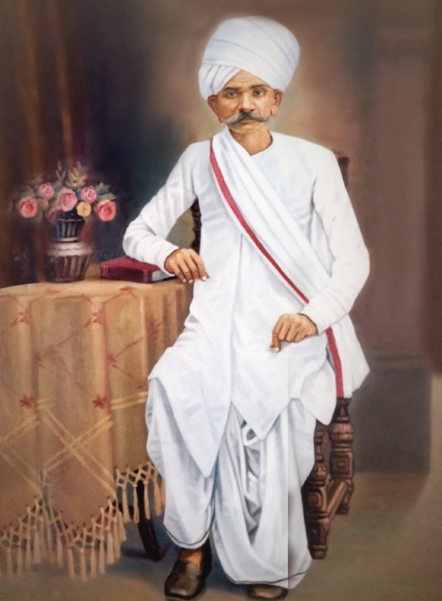

Shri Ravjibhai was the son of Shri Panchanbhai, who had moved to Vavania from Manekwada (Morbi district) in V.S. 1892 (1836 A.D.). Panchanbhai had established a shipping and moneylending business in Vavania and was himself a devotee of Lord Krishna. Ravjibhai continued the family's moneylending trade in Vavania.
Shri Ravjibhai

Shri Ravjibhai
| Shri Ravjibhai | |
|---|---|
| Relation | Param Krupalu Dev's father |
| Born | V.S. 1902 |
| Father | Shri Panchanbhai |
| Wife | Smt. Devba |
| Occupation | Moneylender in Vavania and nearby villages |
| Religion | Vaishnav |
| Significance | Father of Param Krupalu Dev; kind-hearted and charitable; served monks, saints and fakirs |
Shri Ravjibhai was the father of Shrimad Rajchandra. Born in V.S. 1902, he was a moneylender in Vavania and surrounding villages. He followed the Vaishnav religion and was known for his kind-hearted and charitable nature — he readily served monks, saints and fakirs who visited the village. His wife was Smt. Devba, who came from a Jain family.
Background
Livelihood
Ravjibhai worked as a moneylender in Vavania and the surrounding villages, including Chamanpar. This was a continuation of the business established by his father Shri Panchanbhai. The family was reasonably well-settled in Vavania and held a respected position in the community.
Character and faith
Ravjibhai followed the Vaishnav religion. He was described as kind-hearted and charitable by nature — qualities that manifested in his service to monks, saints and fakirs who came to Vavania. Despite his Vaishnav faith and his wife Devba's Jain background, the household accommodated both traditions harmoniously. This tolerant, spiritually receptive environment provided the setting in which Param Krupalu Dev spent His early childhood.
Family
Ravjibhai and Devba had six children:
- Shivkunvarben — the eldest
- Shrimad Rajchandra — the second child
- Meenaben — married Shri Tokarshi Pitamber from Anjar, Kutch
- Jhabakben — married Shri Jasraj Doshi of Vavania
- Shri Mansukhbhai — joined the business firm after V.S. 1951
- Jijiben — the youngest
Shri Popatbhai Manji, a childhood friend of Param Krupalu Dev, was the son of Manjibhai who was among the first to recognise Param Krupalu Dev's extraordinary powers — he had witnessed Param Krupalu Dev's avdhan performances in Morbi and rushed back to Ravjibhai's house at night to exclaim about the incredible feat.